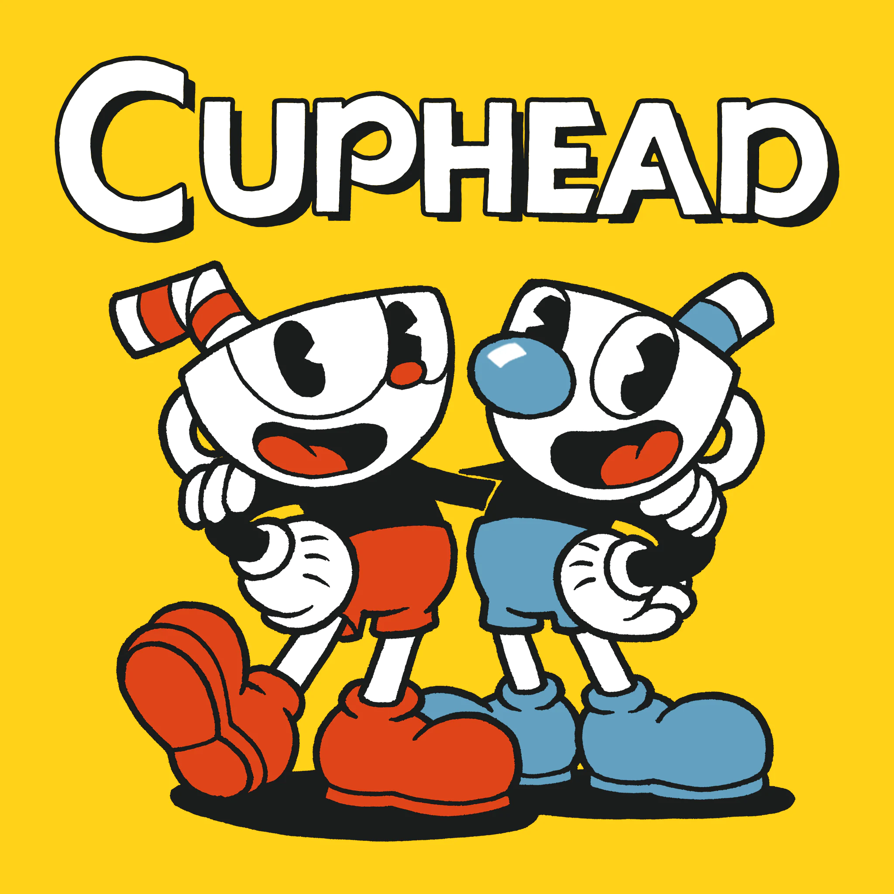

Image Hover
Cuphead is a run and gun indie video game developed and published by StudioMDHR. First announced in 2013, the game was released for Microsoft Windows and Xbox One in September 29th, 2017, for macOS in October 19th, 2018, for Nintendo Switch in April 18th, 2019, and for PlayStation 4 in July 28th, 2020. The game was inspired by the rubber hose style of animation used in cartoons of the 1930s, such as the work of studios Fleischer and Walt Disney Animation, and seeks to emulate their subversive and surrealist qualities.
Cuphead is a run and gun indie video game developed and published by StudioMDHR. First announced in 2013, the game was released for Microsoft Windows and Xbox One in September 29th, 2017, for macOS in October 19th, 2018, for Nintendo Switch in April 18th, 2019, and for PlayStation 4 in July 28th, 2020. The game was inspired by the rubber hose style of animation used in cartoons of the 1930s, such as the work of studios Fleischer and Walt Disney Animation, and seeks to emulate their subversive and surrealist qualities.